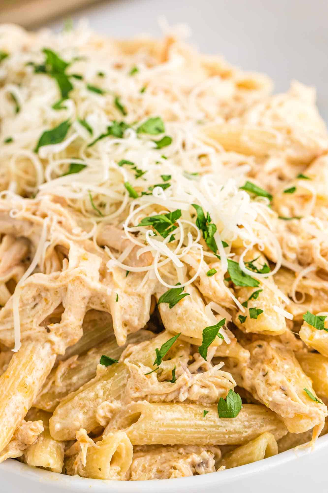

Slow Cooker Olive Garden Chicken Pasta

Description
Tender chicken is cooked low and slow with delicious Olive Garden Italian Dressing and creamy cheeses, creating the perfect pasta sauce!
Ingredients
- Pasta
- Chicken Breasts
- Parmesan Cheese
- Cream Cheese
- Italian Dressing
Steps
- Fill: Add the ingredients into the slow cooker. First place the chicken breasts in, then pour the entire bottle of Italian dressing over the chicken. Top with parmesan cheese, and place the cream cheese on top of that.
- Cook: Cover with the lid and cook on low for 6 hours or on high for 4 hours. The chicken is ready when the internal temperature of the thickest part of the breast is 165°F/74°C
- Cook Pasta: Just before the chicken is ready, cook the pasta according to the package directions. Drain and set aside.
- Shred: Once the chicken is cooked, shred it using two forks, being careful not to shred it too finely.
- Combine: Add the pasta to the chicken and sauce in the slow cooker, and stir gently to combine. Serve warm with breadsticks and a salad, just like at the Olive Garden!